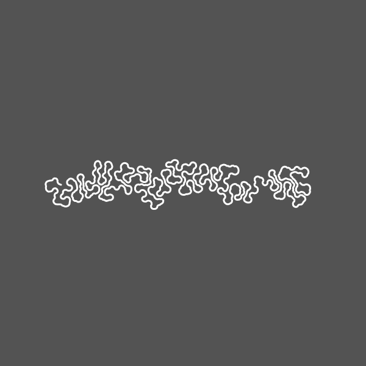
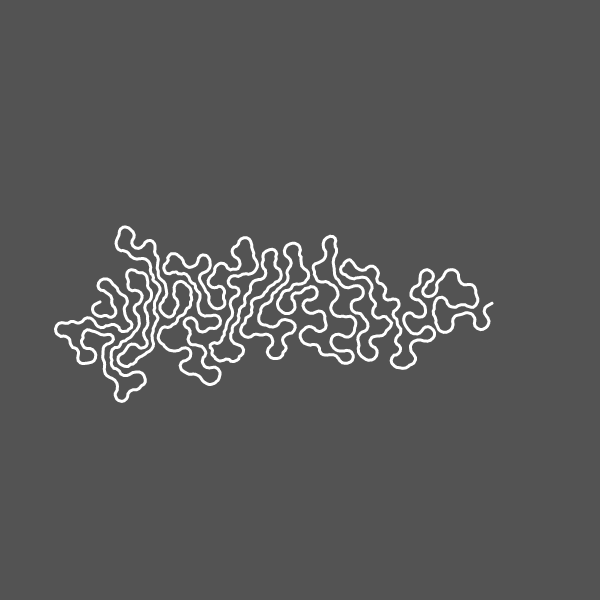
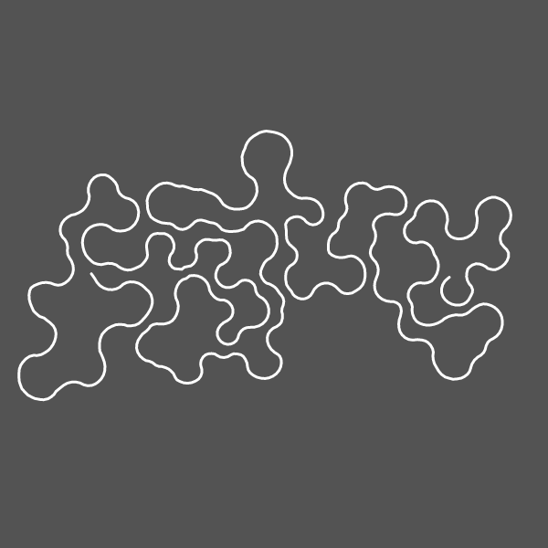

Differential Growth
Differential growth is the result of gradually adding nodes to a line of nodes that are controlled by a set of forces. the forces include an attraction force, which pulls each node towards the nodes either side of it. the second force pulls each node to the mid point of the adjacent two nodes, this has the effect of straightenign the line. and the final force is a repulsion force, this pushes the nodes away from every other node each


